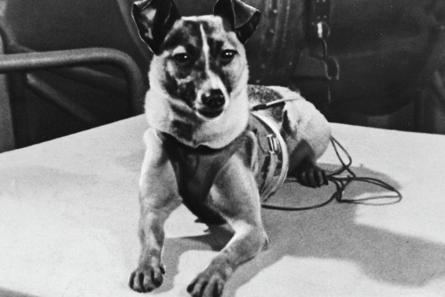

Лайка (собака-космонавт)
 Лайка (1954 — 3 ноября 1957) — собака-космонавт, первое животное, выведенное на орбиту Земли. Была запущена в космос 3 ноября 1957 года в половине шестого утра по московскому времени на советском корабле «Спутник-2». На тот момент Лайке было около двух лет. Возвращение Лайки на Землю конструкцией космического аппарата не предусматривалось. Собака погибла во время полёта через 5—7 часов после старта от перегрева, хотя предполагалось, что она проживёт на орбите около недели
Спутник-2
В конструировании герметичной кабины «Спутника-2», в которой должна была лететь Лайка, помимо конструкторов участвовали медики и инженеры В. И. Данилейко, Л. А. Гребенёв, В. С. Георгиевский, В. Г. Буйлов и А. И. Афанасьев[3]. Герметичная кабина выглядела как цилиндр с выпуклым дном. В кабине имелись автомат питания, система кондиционирования, которая представляла собой регенерационную установку.
Устройство регенерации воздуха, рассчитанное на 7 суток работы, состояло из пластин высокоактивных химических соединений, через которые проходил воздух для обогащения кислородом и удаления водяных паров и углекислого газа. Устройства регенерации были расположены в специальных кожухах слева и справа от собаки. Их разработкой занимались А. Д. Серяпин и З. С. Скуридина.
Объединение «Биофизприбор» занималось разработкой аппаратуры «КМА-01» для регистрации данных физиологии животного. «КМА-01» мог регистрировать пульс, частоту дыхания, кровяное давление, снимать электрокардиограмму и температуру тела.
Автомат кормления являлся автоматическим контейнером, в герметичных ячейках которого была желеобразная питательная смесь. Два раза в сутки автомат открывал крышку контейнера с пищей, богатой белками, жирами, углеводами, витаминами и водой. Наряду с созданием автомата кормления был также разработан оптимальный рацион питания собаки
Подготовка
Для экспериментальных запусков с целью подтверждения безопасности космических полётов предлагались мыши, крысы и собаки. Рассматривался вариант запусков и с обезьянами, но выбор пал на собак, так как они лучше поддаются дрессировке и спокойнее, чем обезьяны.
Конструкторы установили предел массы собак в 6-7 кг, однако маленькие породистые собаки не годились для полёта: чаще всего они были изнежены, слишком требовательны к пище и недостаточно выносливы. Поэтому собак отбирали из приюта для бездомных животных. По рекомендациям специалистов по кино-, фото- и телеаппаратуре решено было отбирать белых собак, потому что белые лучше выглядели в кадре. Из всех белых затем отсеивали по результатам тренировок в барокамерах, на центрифугах и вибростендах.
Из 10 собак 3 претендовали на первый космический полёт с живым существом на борту: Альбина, Лайка и Муха. Альбина уже совершила 2 суборбитальных полёта, но её пожалели, потому что она ждала потомство, и решили, что она будет дублёром. Муху не выбрали из-за небольшой кривизны лап, что выглядело бы некрасиво на фотографиях, и её сделали «технологической собакой». На ней тестировали работу аппаратуры и различных систем.
Настоящая кличка собаки была Кудрявка, но персонал переименовал её в Лайку из-за звонкого лая. Перед полётом Лайке сделали операцию, в ходе которой установили датчики дыхания на рёбра и датчик пульса около сонной артерии.
В течение последнего этапа собак тренировали длительное время в макете контейнера. Когда Лайка была уже на Байконуре, её сажали на несколько часов в кабину, где она привыкала к кормушке, ношению датчиков, комбинезона, ассенизационному устройству и нахождению в замкнутом пространстве.
Комбинезон Лайки крепился к контейнеру маленькими тросиками. Их длина позволяла принимать Лайке лежачее и сидячее положение, а также немного передвигаться назад—вперёд. В нижней трети тросиков стояли контактно-реостатные датчики, назначением которых была регистрация двигательной активности.
Утром 31 октября 1957 года началась подготовка к посадке в спутник. Лайке обработали кожу разбавленным спиртом, места выходов проводов от датчиков обработали йодом. В середине дня Лайку посадили в герметичную камеру, в час ночи её установили на ракету. Незадолго до полёта пришлось разгерметизировать камеру и дать попить воды: наблюдающему медперсоналу показалось, что собака хочет пить
Полёт Лайки
Запуск «Спутника-2» был произведён 3 ноября 1957 года.
Телеметрические данные показывали, что после действий перегрузок, когда Лайка уже оказалась в невесомости, частота пульса восстановилась до почти нормальных значений, двигательная активность стала умеренной, движения — непродолжительные и плавные. Но времени для нормализации пульса понадобилось в 3 раза больше, чем в наземных экспериментах. Электрокардиограмма не показала никаких патологических изменений.
Лайка была жива в течение 4 витков вокруг Земли. Из-за ошибки расчёта площади спутника и отсутствия системы терморегулирования температура за это время поднялась до 40 °C. Собака умерла от перегрева. Сам же спутник совершил 2370 витков вокруг Земли, затем сгорел в атмосфере 14 апреля 1958 года.
Специальная комиссия из ЦК и Совета министров не поверила, что Лайка умерла из-за конструкторской ошибки, и приказала провести эксперименты с похожими условиями на Земле, в результате которых погибло ещё 2 собаки
Реакция
Пресса в СССР не сразу осознала значимость события. ТАСС официально сообщило о запуске «Спутника-2» в тот же день, но в статье сначала было перечислено всё научно-исследовательское оборудование и только в конце было написано, что на борту находится собака по кличке Лайка. В западной же прессе это стало сенсацией. В статьях выражали восхищение ею и одновременно переживали. «Самая лохматая, самая одинокая, самая несчастная в мире собака» — так писала «The New York Times» в своём номере от 5 ноября 1957 года.
В течение 7 дней СССР передавал данные о самочувствии уже мёртвой собаки. Только спустя неделю с момента запуска СССР сообщил о том, что якобы усыпили Лайку. Это вызвало небывалый шквал критики в западных странах со стороны защитников животных. В Кремль пришло много писем с протестами против жестокого обращения с животными и даже с саркастическими предложениями послать Первого секретаря ЦК КПСС Н. С. Хрущёва в космос вместо собаки.
Значение полёта
Эксперимент подтвердил, что живое существо может пережить запуск на орбиту и невесомость. Первыми животными, благополучно вернувшимися из орбитального космического полёта, были собаки Белка и Стрелка. Примечательно, что советские учёные в те годы выбрали для космических испытаний собак, американские — обезьян-шимпанзе.
11 апреля 2008 года в Москве на Петровско-Разумовской аллее на территории Института военной медицины, где готовился космический эксперимент, был установлен памятник Лайке (скульптор — Павел Медведев). Двухметровый памятник представляет собой космическую ракету, переходящую в ладонь, на которой гордо стоит Лайка.